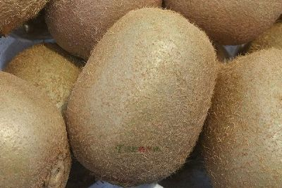
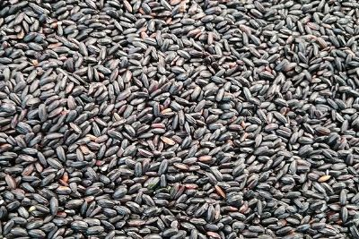

临潼石榴具有悠久的历史，引进初期，先在京都长安（今西安）御花园的“上林苑”和骊山的温泉宫（今华清池）内种植，是供皇子后妃观赏的。东晋潘岳称之为“天下之奇树，九洲之名果”。到了唐代，长安周围石榴栽种已有相当规模。临潼在长安以东二十五公里的地方，南依骊山，北跨渭河，自然条件极宜石榴生长，加之长期培育，形成临潼石榴的优良品种。临潼石榴共有十七个品种，根据植株状况，叶形大小，果实色泽和口味甜酸，可分为普通石榴（食用种）和花石榴（观赏种）两大类。两大类中又有红白之分：红石榴嫩梢、叶柄、花、果、皮和籽粒呈红色；白石榴除梢叶同于红石榴外，花、皮、籽粒均呈黄白色。普通石榴按果汁又可分甜、酸两个品种群。甜石榴中有“临潼净皮甜”、“临潼天红蛋”、“临潼鲁峪蛋”三个大品种；酸石榴中有“大红酸”和“鲁峪酸”两个大品种。普通白石榴目前仅有甜石榴一种，即“临潼三白”，它因花瓣、果皮和籽粒均为白色而得名。
猕猴桃是一种营养价值极高的水果,其可容性固形物含量为1420%，含亮氨酸、苯丙氨酸、异亮氨酸、酪氨酸、缬氨酸、丙氨酸等十多种氨基酸，含有丰富的矿物质，每100克果肉含钙27毫克,磷26毫克，铁1.2毫克，还含有胡萝卜素和多种维生素，其中维生素C的含量达100毫克（每百克果肉中）以上，有的品种高达300毫克以上,是柑桔的510倍，苹果等水果的1530倍，因而在世界上被誉为“水果之王”.由于猕猴桃营养全面、丰富，含有一些人体不可缺少的重要物质，因此，对保持人体健康,防病治病具有重要的作用。多食用猕猴桃可以预防老年骨质疏松；抑制胆固醇在动脉内壁的沉积，从而防治动脉硬化;可改善心肌功能,防治心脏病等。在抗癌方面，具有抑制肠道内亚硝胺对组织的诱变作用。一些癌病人食用猕猴桃后,可以减轻厌食和恶病质，还可以减轻病人作X线照射和化疗中产生的副作用或毒性反应。多食用猕猴桃,还具有阻止体内产生过多的过氧化物,防止老年斑的形成,延缓人体衰老。 
韩城成为全国最大的花椒生产基地返回以盛产“大红袍“花椒而闻名国内外的陕西省韩城市，历尽8年艰辛营造的“百里双千万株花椒基地”最近通过了省级达标验收。至此，韩城市成为全国首家花椒基地达标县(市)，也成为全国最大的的花椒生产基地之一。韩城是司马迁的故里。早在六七百年前就开始栽植花椒．1985年，市委、市0决定，抓住达一林特产品优势，充分利用山区和梯田地硬，因地制宜，见缝插椒，建设“百里双千方株花椒基地”。到今年8月，韩城市已栽植成活花椒2370株，花椒年产量由1万公斤猛增到200万公斤9．产品畅销国内外。
洋县种植黑稻米，距今已有2000多年历史。相传，西汉时代，张骞还未出以前，在汉中家乡成固（今陕西城固、洋县一带）读书。有一天，他在柳林内读书困倦，依树入梦，梦中游历了斗牛宫，拜谒文曲星求问前程。文曲星告诉他：“前程万里。”张骞又问何时发迹。文曲星答曰：“汝见黑米之日，即发迹之时也。”从此以后，张骞除了苦读诗书外，常去河畔寻找黑米。三年后的一天，他终于在野稻中找到一株灰色稻穗，剥开稻壳，果然是黑米。张骞正巧就在这一年出仕。据说，张骞发现的黑米，就是流传至今的洋县黑米。由于黑稻米味美，所以，自西汉汉武帝时代开始，直到清朝末年，洋县黑米均是向帝王进献的贡米。庚子之变，尽管慈禧太后如丧家之犬，仍然念念不忘洋县黑米之香，下令进奉。 
平利女娲茶平利是陕西名茶大县之一。其产茶历史悠久，富含硒元素，并保持自然纯真的品质。目前全县已有1万亩无性系良种高效茶园，5万亩优质名茶生产基地。平利茶的主产区在云雾镣绕的女娲山。美丽的自然环境和神奇的女娲传说赋予了平利茶深厚的文化内涵。近年来，平利县依托丰富的绿色资源的得天独厚的自然环境，将茶叶确立为全县率先突破的主导产业。如今，平利已经打造出“女娲银峰”、“女娲云雾”品牌茶叶，尤其是平利“绞股蓝茶”更是茶中之绝，被誉为“人类福音草”。